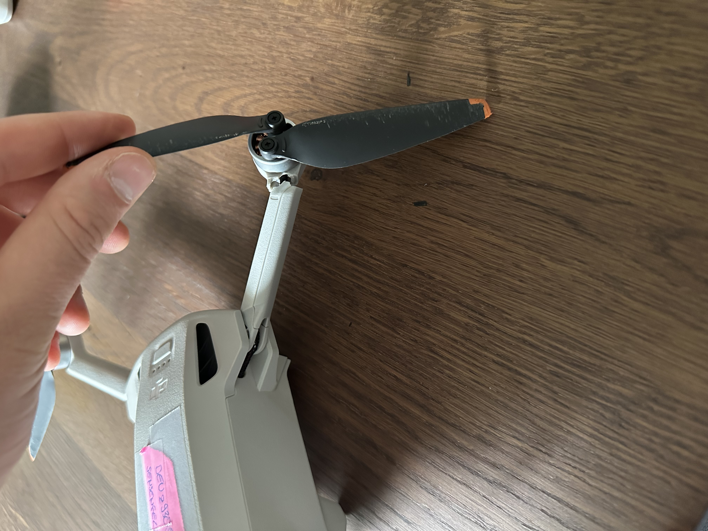

Drohnen sind super, außer wenn sie abstürzen
gebrochener Arm

Reparatur: gebrochener Arm - erfolgreich!
Video vom Startflug nach Absturz mit gebrochenem Arm
Dein Browser unterstützt das Video-Tag nicht.
Testflug erfolgreich; Präsentation einiger Bilder
3D Viewer
Wenn man die Luftbilder verarbeitet, lassen sich 3D Modelle erstellen. Diese kann man dann im Web präsentieren, wie hier in dem iFrame.